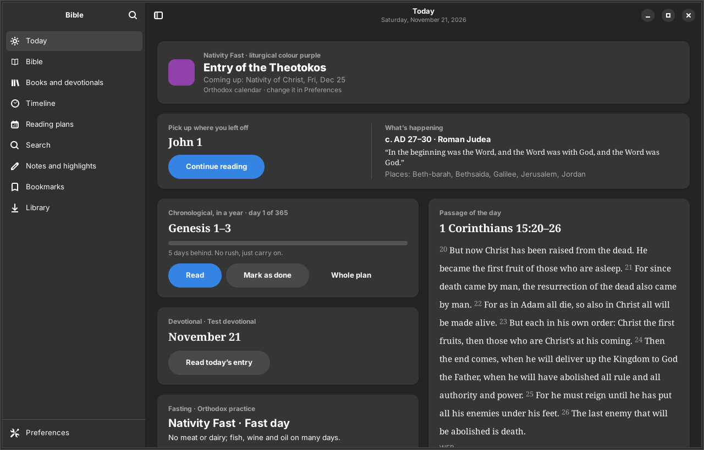
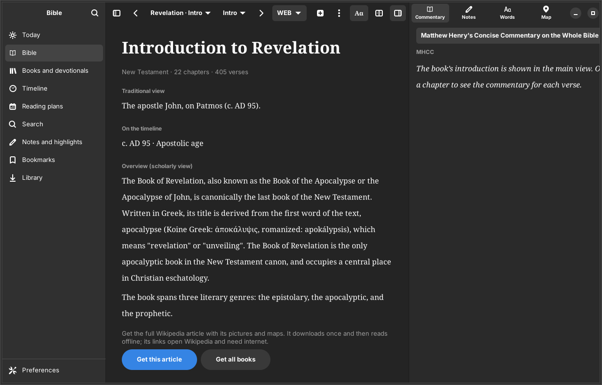
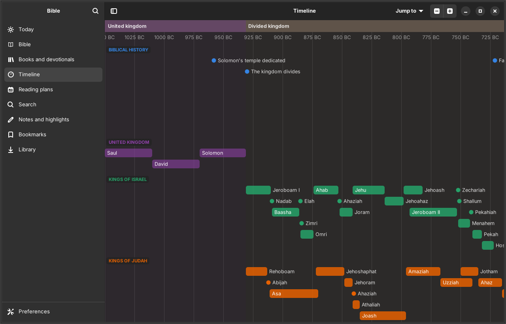

Bible
An offline Bible app for GNOME. Free and open source, with the riches of the whole Christian tradition, as far as you want to go.

Offline first. Everything you download stays with you and works without a connection. Then it reaches as far into Christendom as you want: original languages, cross-references, maps, history, the church year.
What's inside
Read offline
Bibles, commentaries, dictionaries, books and devotionals from SWORD repositories, side by side, with the words of Christ in red.
Greek and Hebrew
Word-by-word interlinear from STEP Bible, with glosses, plain-English grammar, lexicon entries and every occurrence of a word.
Cross-reference map
343,000 cross-references as a rainbow of arcs. Zoom to one verse, or reorder the books by date, writer, language, culture or literary form.
Every book introduced
Built-in introductions to all 66 books and the Apocrypha, with maps, a timeline, and full Wikipedia articles with pictures that read offline once downloaded.
Notes you own
Highlights in named colours, Markdown notes that work with Obsidian, bookmarks with tags, and export.
The church year
Today's feast or season for your tradition (Catholic, Orthodox, Anglican, Protestant), a passage of the day, church history and an optional fasting calendar.
Listen and follow
Chapter audio with GNOME media controls, reading plans that wait for you, and a full-screen presentation mode.
Made for GNOME
Built with GTK 4 and libadwaita, light and dark, with GNOME Shell search and classic printed-Bible typography if you like.
A closer look




Install
Download the .deb from the latest release, then run:
sudo apt install ./bible-app_*_amd64.deb
Needs GTK 4.14+ and libadwaita 1.5+ (Ubuntu 24.04+, Debian 13+). Windows and macOS builds are planned.